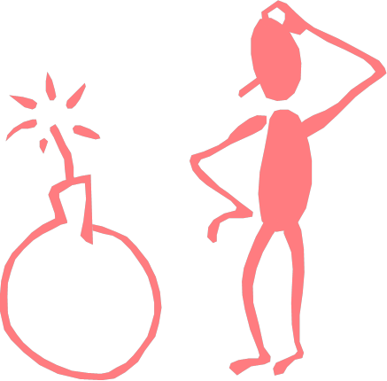
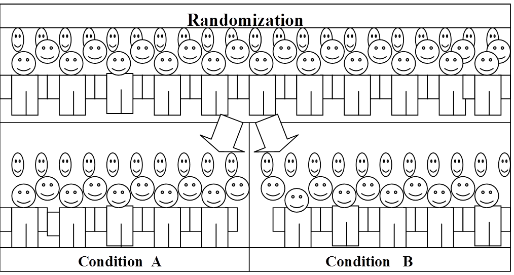
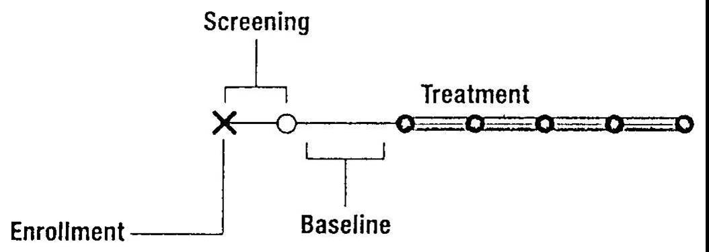
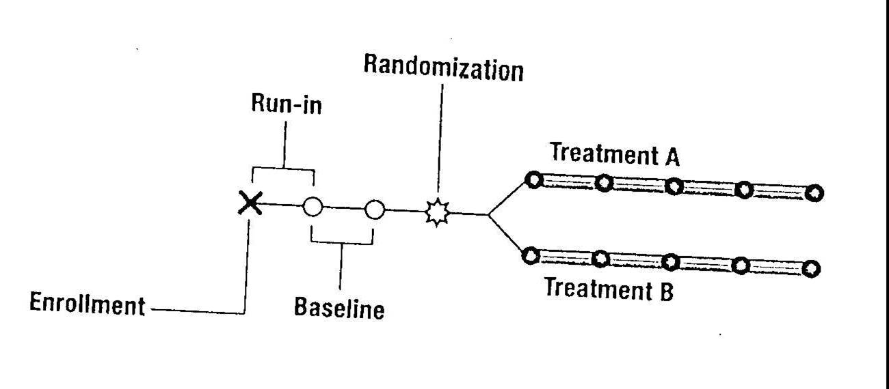
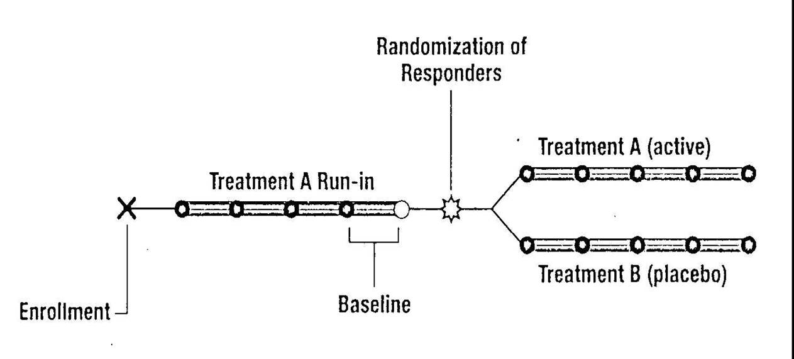
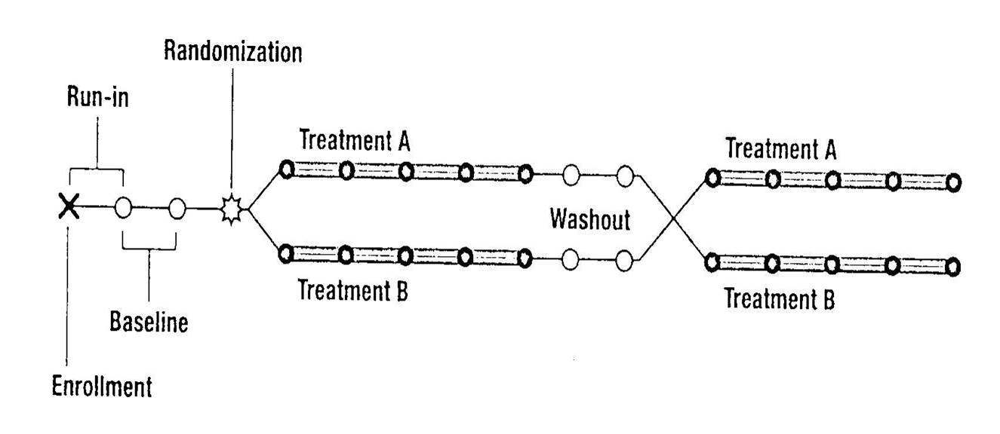
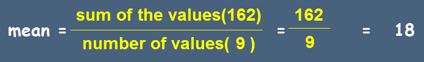
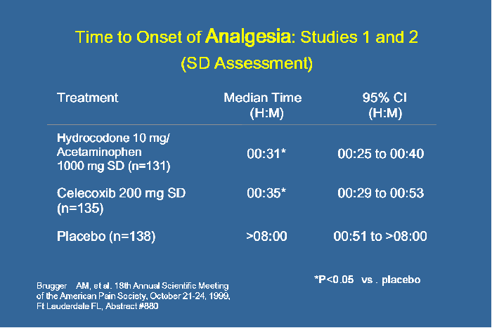
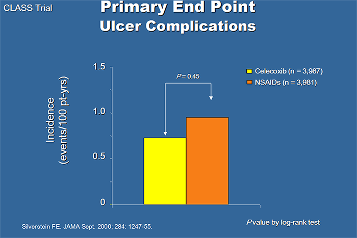

How to Read a Clinical Paper
Anatomy of a Clinical Paper
Abstract
Introduction
Method
Results
Discussion/Summary
References
ABSTRACT
- Roadmap
- Purpose
- Method
- Results
- Discussion/Conclusions
- Summary
Kinds of Abstracts
Structured

Free form

ABSTRACT
Two characteristics to look for further reading:
- If the study has been properly designed and analyzed, would the results be important and worth knowing about?
- If the results are statistically significant, does the magnitude of the change or effect also have clinical significance?
ABSTRACT: Exercise
- Examine the clinical paper given to you.
- On the Exercise Sheet provided, write the Name of the Article, the Author/s, the Name of the Publication, and the date the article was published
INTRODUCTION
Rationale of the study
- Provides necessary background information to place the present study in its proper context
- Provides the reason why (justification or rationale) the present study needs to be done
Purpose of the study
- Aim or objective of the study
- Must be stated clearly
- Frequently at the last paragraph or last two sentences of the introduction
Other information
- May also state/describe the study sites, the duration of the study and the study subjects
- Cite other papers on the same or related topics
Statement of Purpose or OBJECTIVE
Why?
OBJECTIVE: Exercise
- Read the clinical paper assigned to you
- What is/are the objective/s of the study
METHODOLOGY
How?
METHODOLOGY
- Design
- Sample size
- Subjects
- Inclusion criteria
- Exclusion criteria
- Study Endpoints
- Setting
- Instrument
- Intervention
- Methods of analysis
Methodology: Sample Size
The number of patients who enroll and are expected to complete the study
- “N” – entire population
- “n” – group within the entire population
Uses various formula
Based on:
- Magnitude of treatment effect
- The difference between treatment in the primary endpoint
- level of significance
- p value
- power of the study (1-type II error or ß-error)
- The ability to detect a significant difference with the use of a given sample size
- Inclusion criteria = attributes of subjects that are essential for their selection to participate.
- Exclusion criteria = responses of subjects that require their removal as subjects.
Study Endpoints
- >Measurement for what the trial is setting out to prove and directly tied to the study hypothesis
- Primary and secondary
- Hard and soft
Study Endpoints
Primary endpoint:
- Is always the main measurement of the study
- Key factor in determining the sample size of the trial
Secondary endpoint
- Are designed to evaluate some additional aspects of the therapy under study
- Evaluating safety features
- Impact of therapy on the quality of life
- Evaluating efficacy in key subgroups
Study Endpoints
Hard endpoint:
- Are those definitive with respect to the disease process and require no subjectivity in their measurement
- Can be directly quantified
Soft endpoint:
- Are those that do not relate as strongly to the disease or that require subjective assessment
METHODOLOGY: Exercise
- What is/are the primary/secondary endpoint/s of the study?
- Is it hard or soft endpoints?
Methodology: Design
Bias
-It is the effect of any factor that leads systemically to incorrect conclusions about the effects of treatment
Sources Of Bias
....the most pervasive sources of bias are the expectations of investigators and subjects
How to Control Bias
Bias is reduced through the use of:
- control groups
- blinding
- patient
- investigator
- assessor of outcome
- randomization
- grouping
- timing
- ensuring complete follow-up
Methodology: Design
Controls:
- Baseline Control
- Placebo Control
- Active Control
Methodology: Design
Use of Placebo Control:
Placebo
Drug
Methodology: Design
Use of Placebo Control:
- Allows researchers to separate drug effects from psychological and non-specific effects
- Provides a baseline for comparison of drug effects
- “placebo effect” - It is the response to a pharmacologically inactive substance or simulated procedure that is attributable to patient or researcher expectations about treatment rather than specific properties of the substance or procedure itself
Methodology: Design
Use of Placebo Control:
DOUBLE-BLIND DOUBLE DUMMY
Placebo
Drug A
Drug B
Placebo
Methodology: Design
BLINDING:
Refers to a method in which patients or experimenters or both are uninformed or “blind” to the identity of the drug
- Open Label
- Single-Blind
- Double-Blind
Methodology: Design
Types Of Study Blinds: OPEN LABEL
Both subject and physician know the identity of the drug
Subject
Doctor
Methodology: Design
Types Of Study Blinds: SINGLEBLIND
The subject does not know the drug identity
Subject
Doctor
Methodology: Design
Types Of Study Blinds: Double Blind
Neither the subject nor the doctor knows the identity of the drug
Subject
Doctor
Methodology: Design
Randomization:
Is a control method in which the researcher assigns subjects in a clinical trial to the experimental and control group by chance
- Simple
- Stratified
Methodology: Design
Methodology: Design
Single Group Study Design
Methodology: Design
Parallel Group Study Design
Methodology: Design
Structure of a Withdrawal Design
Methodology: Design
Structure of a Crossover Design
Methodology: Design
Timing
- Retrospective
- Look backward in time
- Prospective
- Look forward in time
Methodology: Design
- Prospective Study
- Study in which subjects are identified prospectively and followed up over time
- The outcome of interest have not yet occurred when the study begins
- Retrospective Study
- Study that begins after individuals have already developed or failed to develop an outcome or disease
Methodology: Sample Size
Patient-years
- Total duration of exposure of patients to the drug
SAMPLE SIZE: Exercise
Check the number of sample size of the study.
- N
- n
What is the power of the study to detect a difference?
Methodology:Subjects
- age
- sex
- diagnosis
- duration of disease
- severity of disease
- excluded history
- excluded current conditions, treatments, or practices
Methodology:Setting
Describes place or where the study is undertaken e.g.
- In-patient
- ward
- ICU
- tertiary care hospital
- Out-patient
- primary care clinic
- cardiac clinic
Methodology:Instrument
Describes the tool or equipment used for the study e.g.
- IIEF
- Sphygmomanometer
- ECG machine
- Holter Monitor
Methodology: Intervention
Experimental treatment whose effects are compared to a control
- Active control
- Placebo
Methodology: Intervention
Describes the treatment or procedure undertaken e.g.
- Sildenafil citrate or placebo were taken by the subjects, one hour before planned sexual activity
Methodology: Methods of Analysis
Statistical tests:
- used to quantify the probability that the observed differences between two treatment groups are due to chance
Familiar measures of central tendency:
- Mean
- Median
- Mode
Methodology:
Methods of Analysis
Mean:
- Average of a set of values, usually arithmetic mean.
- Values (data) are summed up and divided by the number of values.
Example
10, 12, 14, 16, 18, 20, 22, 24, 26 (9 sets of values)
Methodology:
Methods of Analysis
Median:
- Central value (middle) in the set of measurement.
Example
10, 11, 12, 13, 14, 15, 16, 17, 18, 19, 20
Median is the middle or central value observed = 15
Methodology:
Methods of Analysis
MODE:
- Most frequently observed value in a set of measurement.
Example
10, 13, 19, 20, 10, 11, 14, 15, 16, 10, 10
Mode is the most frequently observed number = 10
Methodology:
Methods of Analysis
- t-test
- ANOVA
- Chi square ( X2)
Methodology:
Methods of Analysis
- Intention-To-Treat (ITT)
- PER PROTOCOL ANALYSIS
Methodology:
Methods of Analysis
- Intent-to-treat analysis
- This refers to statistical analysis where data from all patients who had at least one exposure (one dose) to the experimental drug being tested are included.
- Per-protocol analysis
- This refers to statistical analysis that includes data from patients who had completed a predefined period of drug exposure in the clinical trial protocol.
RESULTS
Describes the outcome of the data gathered
Most usual results provided are data on:
Primary and secondary endpoints
- efficacy
- safety
- tolerability
Statistical Analysis
Mathematical manipulation of facts, or data, which allow researchers to organize results and to see if the measured differences between to conditions were anything more than a chance occurrence
- Level of significance ( p value)
- Confidence interval
Statistical Analysis: Level of Significance ( p value)
The probability that the observed difference is due to chance
Usually < 0.05
Interpretation of STATISTICAL significance:
- if p-value < 0.05, then difference between groups is significant
- if p-value is > 0.05, difference is NOT significant
Statistical Analysis: Confidence Interval
It is alternatively referred to as level of significance
A .05 level of significance is the same as a 95% confidence interval
Statistical Analysis: Confidence Interval
It is a statistical technique to estimate the effect in the real population
A range of numerical values around the number observed in the study
Expressed as a pair of values
- 95% CI: 0.60, 0.75
Relative Risk
- POINT ESTIMATE: single value
- INTERVAL ESTIMATE: true effect lies within the range of values
RR = 0.65 [95% CI: 0.60, 0.70]
Relative Risk
RELATIVE RISK = RISK t / RISK c
RR < 1 ---> BENEFICIAL
RR = 1 ---> USELESS
RR > 1 ---> HARMFUL
Number Needed to Treat (NNT)
- Always a whole number
- Number of patients that we need to treat with the experimental therapy for the duration of the trial in order to prevent one additional bad outcome.
- Always have a dimension of follow-up time associated with them
EXERCISE :Clinically Useful Measures of Effects of Treatment
Parts of a Table
- Title
- Patient group
- Sample size
- Parameter for evaluation
- results
- p-value or confidence interval
- Investigator
Parts of a Table:Exercise
Parts of a Graph
- Title
- (diagnosis of patients, treatment done, design)
- X-axis
- (user describes patient group)
- Y-axis
- ( describes number, usually %)
- N (sample size)
- Data represented by the graph
- (bar, line, dots)
- p-value
Interpreting a Graph
Take note of the different parts
Eyeball data
Determine p-value
- if p-value .05, then difference between groups is significant
- if p-value is > .05, difference is NOT significant
Parts of a Graph:Exercise
Statistically Significant and Clinically Significant
- Clinically significant
- Means that the observed results affect the clinical status of the patient
- Statistically significant results must not be confused with clinically significant results
- A statistically significant effect may not be clinically significant
SUMMARY/DISCUSSION
- Summarizes the statistical data
- Provides clinical relevance of results
- Answers the objectives of the study
SUMMARY/DISCUSSION: Exercise
- Is the study clinically relevant?
- Were the objectives of the study answered?
- Were the endpoints achieved?
Reliability and Validity
- Reliability:
- The study is described so precisely that it could be replicated by other researchers and the same results would be obtained
- Validity:
- the study proves what it intends to prove
The References
- A bibliography of the other research papers cited as background material or evidence for the need for research
- Numbered in the order that they were cited in the body of the paper
The References
- The literature reference includes:
- Researcher’s name
- The title of the article
- The journal in which the article was published
- The volume
- The pages where the article appears
- The data and year the article was published
The References: Exercise
- In what year was the study published?
- What was the name of the journal in which it was published?
- In which volume was the journal published